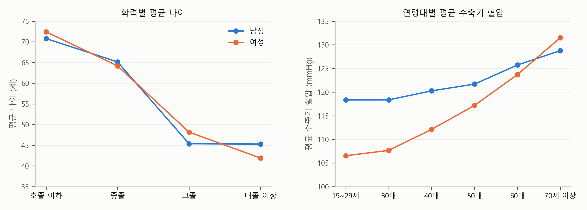
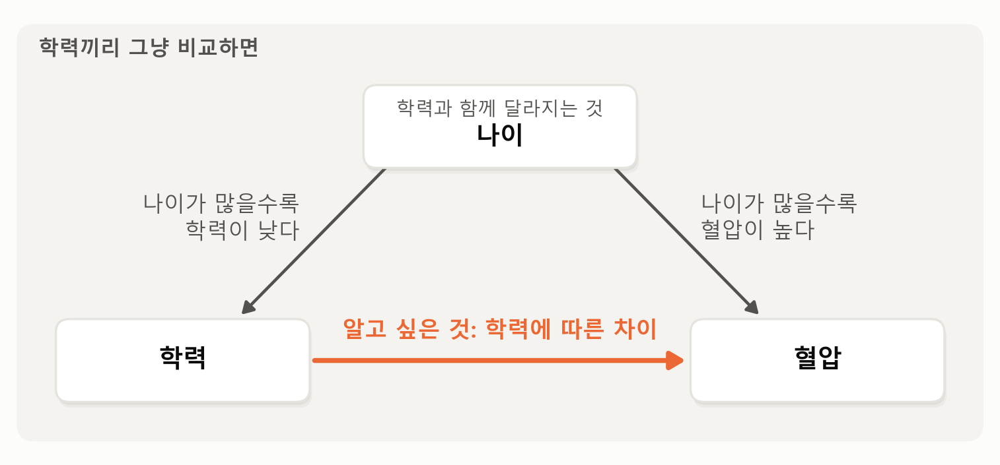

3. 다른 조건이 같다면 — 계수는 무엇을 비교하나#
이 장 첫머리의 보고서는 회귀식과 요약의 첫 두 줄을 이렇게 적었습니다.
수축기 혈압(mmHg) = 학력 더미 3개 (기준: 초졸 이하) + 여성 + 나이 + 나이²
성별과 나이가 같다면 대졸 이상의 수축기 혈압은 초졸 이하보다 7.5mmHg 낮다(95% 신뢰구간 −9.3 ~ −5.7). 중졸은 −2.7, 고졸은 −5.1로, 학력이 높을수록 낮다.
학력과 나이가 같다면 여성의 수축기 혈압은 남성보다 6.3mmHg 낮다(95% 신뢰구간 −7.1 ~ −5.5).
그런데 보고서의 그림 왼쪽 패널을 보면 학력에 따른 차이가 훨씬 커 보입니다. 남녀를 합쳐 학력끼리 그냥 비교하면 초졸 이하의 평균 수축기 혈압은 130.6, 대졸 이상은 115.6으로, 차이가 15.0mmHg입니다. 그런데 회귀식은 그 차이가 7.5라고 말합니다. 나머지 절반은 어디로 갔을까요?
미리 답부터 말하면, 학력끼리 그냥 비교하면 나이의 차이까지 함께 비교하게 됩니다. 초졸 이하는 대부분 고령자이고, 혈압은 나이가 들수록 높아지기 때문입니다. 성별과 나이가 같은 사람끼리 비교하면 학력의 차이는 7.5로 줄어듭니다. 다중회귀분석 장에서 배운 “다른 조건이 같다면”을 이 자료에 그대로 쓰는 것입니다. 이 절에서는 먼저 그 이유를 보고, 보고서의 회귀식을 하나씩 읽습니다.
총무부의 혈압 — 나이를 맞추고 비교하기#
회사 건강검진 결과를 부서별로 정리했더니, 총무부 직원들의 혈압이 가장 높게 나왔다고 해 봅시다. 총무부 일이 특별히 스트레스가 많은 걸까요? 명단을 보니 총무부에는 근속 20년이 넘은 고참 직원이 많습니다. 혈압은 나이가 들수록 높아지니, 총무부의 높은 혈압 가운데 일부는 부서의 일 때문이 아니라 나이 때문입니다. 부서의 차이를 보려면 나이가 같은 사람끼리 비교해야 합니다. 다중회귀분석 장에서 배운 “다른 조건이 같다면”이 바로 이것이었죠.
학력과 혈압에서도 똑같은 일이 일어납니다. 그림 3-1을 봅시다.

그림 3-1. 왼쪽: 학력별 평균 나이(가중 평균). 오른쪽: 연령대별 평균 수축기 혈압(가중 평균). 파랑은 남성, 주황은 여성.
그림의 왼쪽 패널을 보면 학력에 따라 나이가 크게 다릅니다. 초졸 이하의 평균 나이는 남성 70.8세, 여성 72.4세이고, 대졸 이상은 남성 45.3세, 여성 41.9세입니다. 지금의 70대가 자랄 때는 대학에 가는 사람이 드물었으니 당연한 일입니다. 오른쪽 패널은 나이에 따른 수축기 혈압입니다. 남녀 모두 나이가 들수록 높아집니다. 남성은 20대에 이미 118로 높은 편이고 70세 이상에서 129가 되는데, 여성은 20대에 107로 낮다가 빠르게 올라 70세 이상에서는 132로 남성을 넘어섭니다.
두 패널을 이어 보면 답이 보입니다. 초졸 이하는 대부분 70대이고, 70대는 혈압이 높습니다. 대졸 이상은 대부분 40대와 50대이고, 그 나이의 혈압은 70대보다 낮습니다. 그러니 학력끼리 그냥 비교하면, 초졸 이하의 혈압이 학력과 상관없이 나이 때문에 높게 나옵니다. 15.0이라는 차이는 학력의 차이에 나이의 차이까지 얹혀 부풀려진 숫자인 것이죠.
그림 3-2는 나이, 학력, 혈압 세 변수가 서로 어떻게 연결돼 있는지를 그린 것입니다.

그림 3-2. 학력끼리 평균 수축기 혈압을 그냥 비교하면 학력에 따른 혈압의 차이에 나이의 몫이 함께 섞인다.
그림에서 보듯이 우리가 알고 싶은 것은 아래쪽 화살표, 곧 학력에 따른 혈압의 차이입니다. 그런데 나이가 학력과도, 혈압과도 연결돼 있습니다. 나이가 많은 사람일수록 학력이 낮고 혈압이 높으니, 학력끼리 그냥 비교하면 위쪽으로 돌아오는 나이의 몫이 아래쪽 화살표에 함께 섞입니다.
이제 회귀식으로 가 보겠습니다. 학력에서 나이의 몫을 빼려면 회귀식에 학력과 함께 나이를 넣으면 됩니다. 그러면 학력의 계수는 나이가 같은 사람끼리 비교한 학력의 차이가 됩니다. 표 3-1은 학력에 성별과 나이를 하나씩 더해 간 결과입니다.
표 3-1. 수축기 혈압의 회귀분석 — 학력에 성별과 나이를 더해 가면
(1) 학력만 |
(2) + 성별 |
(3) + 나이, 나이² (보고서) |
|
|---|---|---|---|
상수항 |
130.57 (0.61) |
135.05 (0.69) |
119.59 (1.65) |
중졸 |
−4.50 (1.02) |
−5.40 (1.06) |
−2.72 (1.04) |
고졸 |
−11.41 (0.75) |
−12.90 (0.77) |
−5.07 (0.82) |
대졸 이상 |
−15.01 (0.68) |
−16.46 (0.70) |
−7.53 (0.90) |
여성 |
−6.48 (0.40) |
−6.29 (0.40) |
|
나이 |
0.024 (0.082) |
||
나이² |
0.0026 (0.0009) |
||
\(R^2\) |
0.106 |
0.150 |
0.212 |
주: 괄호는 표본설계를 반영한 표준오차, 가중치 적용, \(n\) = 5,731. 학력의 기준은 초졸 이하.
표에서 보듯이 대졸 이상의 계수는 학력만 넣었을 때 −15.01이고, 성별을 더해도 −16.46으로 크게 바뀌지 않다가, 나이까지 더하자 −7.53으로 절반이 됩니다. 변수를 더할 때마다 “누구와 누구를 비교하는가”가 좁혀집니다. (1)열의 대졸 이상 계수는 대졸 이상 전체의 평균 혈압과 초졸 이하 전체의 평균 혈압의 차이 그대로입니다. (2)열의 계수는 성별이 같은 대졸 이상과 초졸 이하를 비교한 차이입니다. (3)열의 계수는 성별도 같고 나이도 같은 대졸 이상과 초졸 이하를 비교한 차이입니다. 보고서의 회귀 결과 표는 이 (3)열에서 상수항만 빼고 옮긴 것입니다. 그리고 보고서의 그림이 왼쪽 패널과 오른쪽 패널에서 다르게 보이는 것도 같은 이유입니다. 왼쪽 패널은 (1)열처럼 그냥 비교한 평균이고, 오른쪽 패널은 (3)열의 회귀식으로 모든 사람의 나이를 50세로 맞춘 예상값입니다. 오른쪽 패널의 선이 더 완만한 것은 나이의 몫이 빠졌기 때문입니다.
같은 연령대 안에서 비교해 보기#
회귀식에 나이를 넣는 것이 “나이가 같은 사람끼리 비교”라는 말이 잘 와닿지 않는다면, 회귀식 없이 같은 일을 해 볼 수 있습니다. 나이가 비슷한 사람들만 따로 모아 놓고 학력별 평균을 내는 것입니다. 표 3-2는 60세 이상만 모아 남녀별, 학력별 평균 수축기 혈압을 계산한 것입니다.
표 3-2. 60세 이상의 학력별 평균 수축기 혈압(가중 평균)
초졸 이하 |
중졸 |
고졸 |
대졸 이상 |
|
|---|---|---|---|---|
남성 |
129.4 |
128.8 |
126.0 |
124.7 |
여성 |
131.2 |
126.5 |
123.1 |
122.7 |
표에서 보듯이 같은 연령대 안에서도 학력이 높을수록 혈압이 낮습니다. 다만 초졸 이하와 대졸 이상의 차이는 남성 4.7, 여성 8.5로, 그냥 비교한 15.0보다 훨씬 작습니다. 나이를 맞추면 학력의 차이가 줄어든다는 것을 회귀식 없이도 확인할 수 있습니다. 그리고 그 차이가 여성에서 더 크다는 점은 기억해 둡시다. 다음 절에서 다시 봅니다.
그러면 왜 처음부터 이렇게 하지 않고 회귀식을 쓸까요? 연령대를 나누면 칸마다 사람 수가 줄어드는데, 어떤 칸은 거의 비어 버립니다. 40세에서 59세 사이 남성 가운데 초졸 이하는 9명뿐이고, 39세 이하에서는 거의 없습니다. 이런 칸의 평균은 믿을 수 없습니다. 회귀식은 나이를 칸으로 자르지 않고 나이와 나이²로 그린 매끄러운 곡선으로 감안하므로, 모든 사람의 정보를 함께 씁니다. 대신 그 곡선의 모양이 맞다고 가정하는 셈입니다. 이 곡선 덕분에 회귀식은 사람이 거의 없는 칸에서도 예상값을 내놓습니다. 보고서의 그림 오른쪽 패널이 그 예입니다. 이 패널은 모든 학력의 나이를 50세로 맞췄지만, 이 자료에 50세 무렵의 초졸 이하는 거의 없습니다. 그러니 초졸 이하의 점은 실제로 관측된 50세 초졸 이하의 평균이 아니라, 고령의 초졸 이하에게서 얻은 정보를 회귀식의 곡선을 따라 50세로 옮겨 온 값입니다. 그래서 초졸 이하의 신뢰구간이 다른 학력보다 넓습니다.
💡 팁: AI의 회귀분석 보고서에서 집단별 평균의 차이가 크게 나왔다면, 그 집단들이 나이처럼 결과에 영향을 주는 다른 변수에서도 크게 다르지 않은지 물어보세요. “학력별 평균 나이와 여성 비율도 보여 줘. 성별과 나이를 통제하기 전과 후의 계수를 나란히 비교해 줘”라고 요청하면 됩니다.
회귀식 읽기 — 더미 변수와 나이 곡선#
이제 보고서의 회귀 결과 표를 하나씩 읽겠습니다. 이 회귀식에는 다중회귀분석 장에서 소개한 두 가지 장치가 들어 있습니다. 더미 변수와 제곱항입니다.
먼저 학력입니다. 학력은 네 단계이므로, 초졸 이하를 기준으로 두고 중졸, 고졸, 대졸 이상의 더미 변수 세 개를 넣었습니다. 그래서 계수는 모두 “초졸 이하와 비교한 차이”입니다. 성별과 나이가 같다면 중졸은 초졸 이하보다 2.72, 고졸은 5.07, 대졸 이상은 7.53mmHg 낮습니다. 학력이 한 단계 올라갈 때마다 2.4mmHg 안팎씩 고르게 낮아지는 셈입니다.
다음은 성별입니다. 여성이면 1, 남성이면 0인 더미 변수 하나입니다. 계수 −6.29는 학력과 나이가 같다면 여성의 혈압이 남성보다 6.29mmHg 낮다는 뜻입니다. 이 회귀식에서 여성의 계수는 학력에 관계없이 하나입니다. 초졸 이하에서도 대졸 이상에서도 남녀의 차이는 똑같다고 본 것이죠. 보고서의 그림 오른쪽 패널에서 남녀의 두 선이 나란한 것은 그 때문입니다.
마지막으로 나이입니다. 나이의 계수 0.024는 0과 구별되지 않습니다(\(p\)값 0.77). 그렇다고 “나이는 혈압과 관계없다”고 읽으면 안 됩니다. 다중회귀분석 장에서 소개한 제곱항처럼, 나이와 나이²의 계수는 하나씩 읽지 않고 함께 곡선 하나로 읽습니다. 실제로 나이²의 계수 0.0026은 0과 분명히 구별됩니다(\(p\)값 0.004). 통계적으로 유의하다는 것이죠. 이 계수가 양수라서, 혈압은 나이가 들수록 오르고, 나이가 많을수록 더 가파르게 오릅니다. 회귀식으로 예상해 보면 초졸 이하 남성의 혈압은 30세 122.6, 50세 127.3, 70세 134.0입니다. 30세에서 50세 사이에는 4.7, 50세에서 70세 사이에는 6.7이 오릅니다.
보고서의 그림 오른쪽 패널의 점은 이 회귀식에 값을 넣어 계산한 것입니다. 가령 50세 초졸 이하 남성이라면, 119.59 + 0.0236 × 50 + 0.0026 × 50² ≈ 127.3이 됩니다.
학력 대신 소득으로 해 보면#
보고서는 학력을 썼지만, 같은 질문을 소득으로도 던질 수 있습니다. 자료에는 소득을 다섯 단계로 나눈 소득분위 변수가 있습니다. 이 분위는 모든 사람을 한 줄로 세워 나눈 것이 아니라, 같은 성별, 같은 나이대(5세 단위) 안에서 소득이 가장 낮은 20%를 1분위, 가장 높은 20%를 5분위로 나눈 것입니다. 자료를 성별과 5세 나이대로 나눠 세어 보면 어느 칸에나 다섯 분위가 20% 안팎씩 들어 있는 것을 확인할 수 있습니다. 그래서 “소득분위가 높다”는 “같은 성별, 같은 나이대 사람들 가운데 소득이 높은 편이다”로 읽어야 합니다. 자료에는 가구의 한 달 소득 금액도 들어 있지만, 여기서는 이 분위 변수를 씁니다.
표 3-3은 보고서의 회귀식에 학력 대신, 또는 학력과 함께 소득분위(1~5를 숫자 그대로)를 넣은 결과입니다. 세 열을 같은 사람들로 비교하려고, 소득분위가 비어 있는 사람을 뺀 5,715명으로 모두 다시 추정했습니다.
표 3-3. 보고서의 회귀식에 소득분위를 넣으면
(1) 보고서의 회귀식 |
(2) 학력 대신 소득분위 |
(3) 학력과 소득분위 |
|
|---|---|---|---|
상수항 |
119.64 (1.66) |
118.16 (1.65) |
119.91 (1.70) |
중졸 |
−2.78 (1.04) |
−2.75 (1.05) |
|
고졸 |
−5.13 (0.82) |
−5.06 (0.83) |
|
대졸 이상 |
−7.60 (0.90) |
−7.49 (0.89) |
|
소득분위 |
−0.35 (0.15) |
−0.10 (0.15) |
|
여성 |
−6.31 (0.40) |
−5.87 (0.40) |
−6.30 (0.40) |
나이 |
0.026 (0.083) |
−0.217 (0.072) |
0.023 (0.082) |
나이² |
0.0026 (0.0009) |
0.0058 (0.0007) |
0.0026 (0.0009) |
\(R^2\) |
0.212 |
0.198 |
0.212 |
주: 괄호는 표본설계를 반영한 표준오차, 가중치 적용, \(n\) = 5,715. 학력의 기준은 초졸 이하. (1)열은 보고서와 같은 회귀식이지만 사람이 조금 적어 계수가 보고서와 조금 다르다.
표에서 (2)열은 학력 대신 소득분위를 넣은 결과입니다. 성별과 나이가 같을 때 소득분위가 하나 높으면 수축기 혈압이 0.35mmHg 낮습니다(95% 신뢰구간 −0.65에서 −0.04 사이, \(p\)값 0.025). 세 열을 차례로 비교하면 세 가지가 보입니다. 첫째, (1)열과 (2)열을 비교하면 소득분위에 따른 혈압 차이가 학력에 따른 차이보다 훨씬 작습니다. 가장 낮은 1분위와 가장 높은 5분위의 차이로 바꿔도 약 1.4로, 초졸 이하와 대졸 이상의 차이 7.60에 크게 못 미치고, \(R^2\)도 더 작습니다. 둘째, (2)열과 (3)열을 비교하면, 학력을 함께 넣자 소득분위 하나에 따른 차이가 0.35에서 0.10으로 줄어 0과 구별되지 않습니다. 소득분위가 보여 준 관계의 대부분이 학력과 겹친다는 뜻입니다. 셋째, (1)열과 (3)열을 비교하면, 소득분위를 더해도 학력과 다른 변수의 계수가 거의 그대로이고 \(R^2\)도 0.212 그대로입니다. 학력이 들어 있는 회귀식에 소득분위가 더해 주는 것이 거의 없는 것이죠. 이 자료에서는 소득보다 학력이 혈압과 더 뚜렷한 관계를 보인다는 뜻입니다. 다만 이것이 학력이나 소득이 혈압을 바꾼다는 뜻은 아닙니다. 그 이야기는 다음 절과 이 장의 마지막 두 절에서 다시 합니다.
이 표는 단순회귀분석 장에서 본 구별, 곧 통계적으로 유의하다는 것과 실질적으로 중요하다는 것은 다르다는 것의 좋은 예이기도 합니다. (2)열의 소득분위에 따른 0.35mmHg의 차이는 통계적으로 유의하지만(\(p\)값 0.025), 같은 사람의 혈압을 다시 재기만 해도 달라지는 정도의 작은 차이입니다. 반대로 대졸 이상의 7.6mmHg는 정상(120 미만)과 고혈압(140 이상)을 가르는 두 기준 사이 거리의 3분의 1이 넘는, 실질적으로도 큰 차이입니다. 사람을 많이 조사할수록 아주 작은 차이도 통계적으로 유의해지므로, “유의하다”는 말을 들으면 늘 “그래서 얼마나 큰가”를 함께 물어야 합니다.
요약 — 이 절의 물음과 답
학력끼리 그냥 비교하면 차이가 15.0인데, 보고서는 왜 7.5라고 할까? 대졸 이상에는 젊은 사람이 많아서, 그냥 비교하면 나이의 차이까지 함께 비교하게 된다. 성별과 나이를 회귀식에 넣으면 성별과 나이가 같은 사람끼리 학력을 비교한 셈이 되고, 그러자 차이가 7.5로 줄었다.
통계적으로 유의하면 중요한 차이일까? 그렇지 않다. \(p\)값이 작다는 것은 차이를 우연으로 보기 어렵다는 뜻이지, 차이가 크다는 뜻이 아니다. 소득분위가 하나 높을 때 혈압이 0.35 낮다는 차이는 통계적으로 유의하지만, 대졸 이상의 7.6에 비하면 아주 작다.